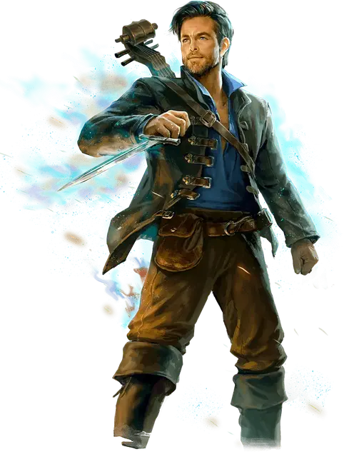

Эдгин Дарвис
Edgin Darvis
Средний Гуманоид (Бард), хаотично-добрый, именной НИП

Класс Доспеха 14 (кожаный доспех)
Хиты 110 (17к8 + 34)
Скорость 30 футов
| мод | спас | ||
|---|---|---|---|
| СИЛ | 14 | +2 | +2 |
| ЛОВ | 16 | +3 | +6 |
| ТЕЛ | 14 | +2 | +2 |
| мод | спас | ||
|---|---|---|---|
| ИНТ | 14 | +2 | +2 |
| МДР | 16 | +3 | +3 |
| ХАР | 18 | +4 | +7 |
Навыки Выступление +10, Ловкость рук +6, Обман +7, Убеждение +10
Чувства пассивное Восприятие 13
Языки Общий
Опасность 5 (1800 опыта)
Бонус мастерства +3
Действия
Мультиатака. Эдгин совершает две атаки укреплённой лютней или две атаки коротким мечом.
Укреплённая лютня. Рукопашная атака оружием: +5 к попаданию, досягаемость 5 футов, одна цель. Попадание: 6 (1к8+2) дробящего урона плюс 11 (2к10) урона звуком.
Короткий меч. Рукопашная атака оружием: +6 к попаданию, досягаемость 5 футов, одна цель. Попадание: 6 (1к6+3) колющего урона плюс 11 (2к10) урона звуком.
Дезориентирующие слова. Эдгин испускает поток насмешек вперемешку с тонкой магией на от одного до трёх существ, видимых им в пределах 60 футов. Каждая цель должна преуспеть в спасброске Мудрости Сл 15, иначе получит урон психической энергией 10 (3к6), и следующий бросок атаки до начала следующего хода Эдгина совершит с помехой.
Использование заклинаний. Эдгин накладывает одно из следующих заклинаний, используя Харизму в качестве базовой характеристики (Сл спасброска от заклинания 15):
• Неограниченно: дружба [friends], сообщение [message]
• 3/день каждое: маскировка [disguise self], очарование личности [charm person]
• 1/день: внушение [suggestion]
Реакции
Вдохновляющие слова (3/день). Когда существо, которое Эдгин может видеть в пределах 60 футов от себя, проваливает проверку характеристики, бросок атаки или спасбросок, Эдгин может магически воодушевить это существо. Воодушевлённое существо может добавить 1к8 к своему броску, потенциально превращая провал в успех.
Описание
Эдгин Дарвис обладает талантом к импровизации и стратегии. Он музыкант и рассказчик, который, чтобы избежать неприятностей, полагается в первую очередь на харизму, а не на магию или мускулы. Когда-то Эдгин был членом Арфистов, шпионской организации, защищающей простых жителей Фаэруна, но он отказался от своей клятвы и занялся воровством, чтобы содержать семью. Моральные принципы Эдгина принуждают его красть только у тех, кто, по его мнению, заслуживает того, чтобы потерять и монету, и лицо.
Уверенность в себе и развязное поведение делают Эдгина прирожденным лидером. Тщательно подобранными словами он вдохновляет членов своей воровской команды на подвиги. Но когда всплывают ошибки его прошлого, Эдгину приходится за них отвечать. Теперь он стремится загладить свою вину перед теми, кому он причинил вред, и противостоять тем, кто причинял вред ему.